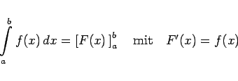
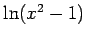
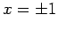
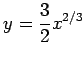

Inhalt Index DeskTop Bronstein

 Integralrechnung Bestimmte Integrale Uneigentliche Integrale, Stieltjes- und Lebesgue-Integrale Integrale mit unbeschränktem Integranden
Integralrechnung Bestimmte Integrale Uneigentliche Integrale, Stieltjes- und Lebesgue-Integrale Integrale mit unbeschränktem Integranden


|  | (8.88) |
ohne Berücksichtigung der singulären Punkte im Innern des Intervalls [a,b] zu groben Fehlern führen.
| Beispiel E |
|
So erhält man durch formale Anwendung des Hauptsatzes auf Beispiel D |
| Beispiel F |
|
In Beispiel D ist die Funktion  für  unstetig, so daß diese Bedingung nicht erfüllt ist. Hingegen ist in Beispiel C die Funktion  für x = 0 stetig, so daß der Hauptsatz auf Beispiel C angewendet werden kann: |